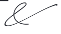

ornament-swirl.svg, vector uit de huisstijl. De ontwerper schrijft de swirl achter de e van Hoeve voor, en staat hem ook toe achter de & en elders waar het beeld het verantwoordt. Gebruik hem maximaal één keer per uiting en nooit binnen een lopende tekstregel — hij is een sieraad, geen leesteken. Op donker: filter:brightness(0) invert(1).